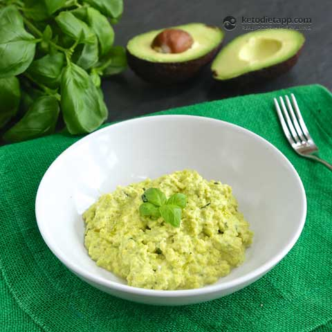

Odin Recipes

Pesto Eggs
This eggcellent breakfast was a favourite among all vikings, but no more than the big boss Odin himself!
Ingredients
Instructions
- Crack three eggs into a bowl and add the pesto.
- Whisk until a consistent, dreamy mixture.
- Place into a pan over medium heat and cook until fluffy.
Back